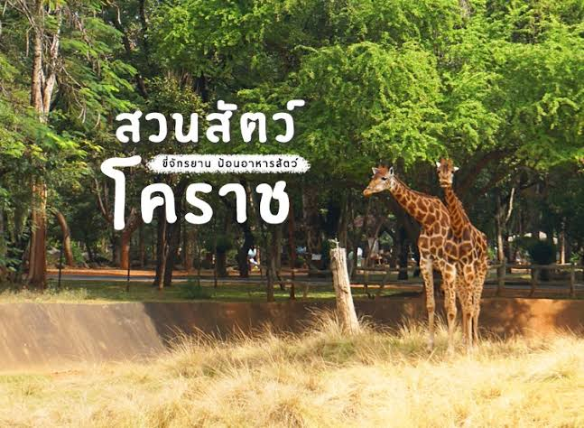
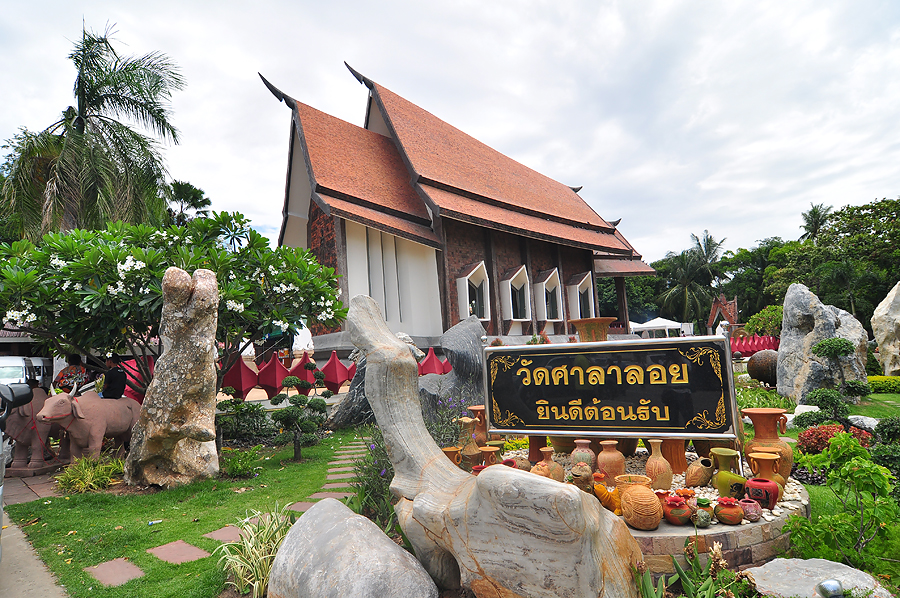
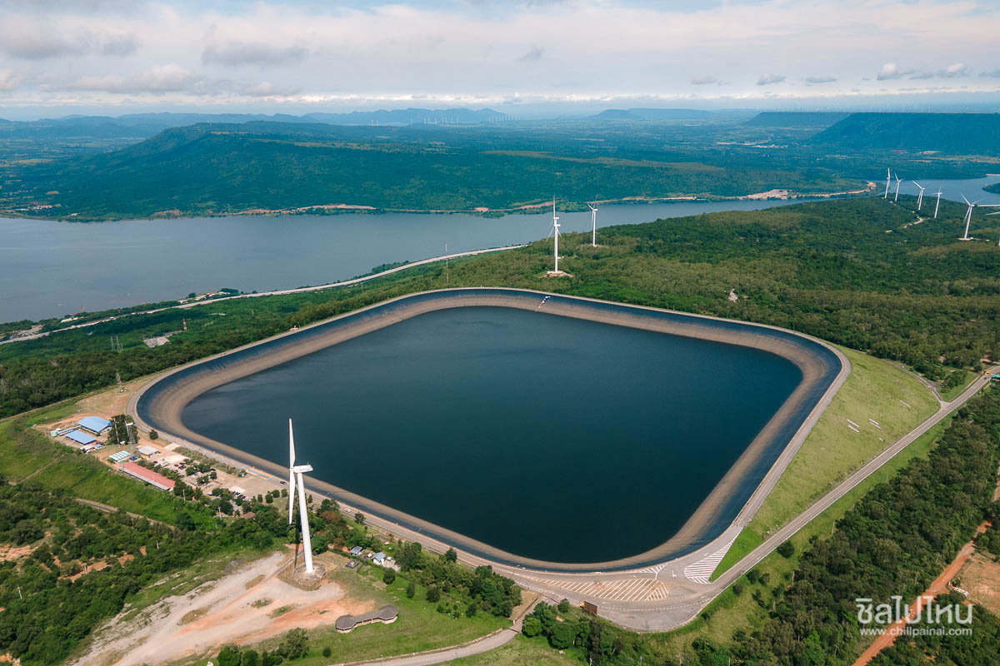
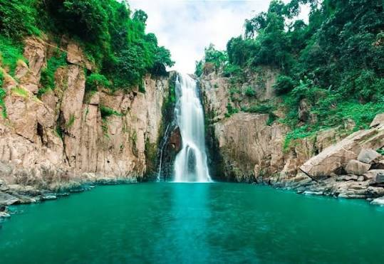
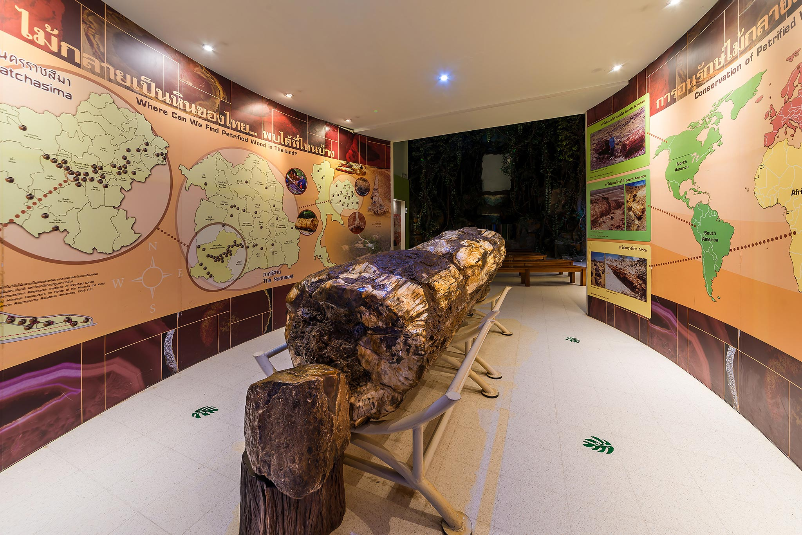

สวนสัตว์นครราชสีมา
ชมความน่ารักของสัตว์ป่า นานาชนิด และส่วนจัดแสดงซาฟารีเปิดโล่งวัดศาลาลอย
วัดโบราณที่ท้าวสุรนารีและคุณย่าโมสร้างขึ้น โดดเด่นด้วยสถาปัตยกรรมเรือสำราญ
จุดชมวิวเขื่อนลำตะคอง
จุดพักรถและชมวิวมุมสูงของอ่างเก็บน้ำเขื่อนลำตะคองที่สวยงามร่มรื่น
อนุสาวรีย์ท้าวสุรนารี (คุณย่าโม)
ศูนย์รวมจิตใจของชาวโคราช สักการะขอพรเพื่อความเป็นสิริมงคล
อุทยานแห่งชาติเขาใหญ่
มรดกโลกทางธรรมชาติ อากาศบริสุทธิ์ ป่าไม้เขียวขจี น้ำตก และสัตว์ป่าอุดมสมบูรณ์
พิพิธภัณฑ์ไม้กรายเป็นหิน
แหล่งเรียนรู้ทางธรณีวิทยา ซากดึกดำบรรพ์ไม้กลายเป็นหินอายุหลายล้านปี